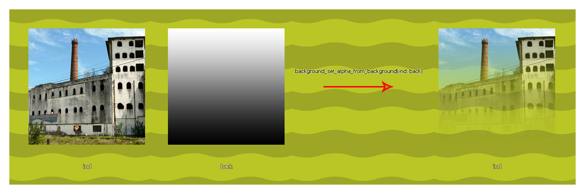

background_set_alpha_from_background(ind, back);
| Argument | Description |
|---|---|
| ind | The index of the background to change the transparency map of. |
| back | The index of the background to take the transparency map data from. |
Returns: N/A
This function uses the value/saturation of one background and multiplies it with the alpha of the target background. Ideally the background being used to generate the new alpha map should be greyscale, with the white areas having an equivalent alpha value of 1 (opaque), the black areas being equivalent to alpha 0 (transparent), and the grey areas being an alpha in between 0 and 1. The background that you are setting the alpha of cannot be a permanent resource as this will give an error, so you should be using the background_duplicate function first to duplicate the resource and then set the alpha on that. You will also need to duplicate the source image to be used with the same function, then set the alpha using both the duplicated images. Below is an image that illustrates how this function works with sprites, but the same is true for backgrounds: 
bck = background_duplicate(bck_Clouds);
var t_bck = background_duplicate(bck_Clouds_Alpha);
background_set_alpha_from_background(bck, t_bck);
background_delete(t_bck);
The above code duplicates two background resources and then changes the first one's alpha using the value/saturation of the colour data from the resource "bck_Clouds_Alpha". The temporary background that was created to hold the "bck_Clouds_Alpha" data is then deleted to free up its memory.